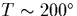

It is known that hydrogen can passivate thermal donors, in a fully reversible manner that is only stable to C [203]. There are a number of unusual features of this hydrogen passivation:
There are two potential ways in which hydrogen can passivate the di-y-lid structure. The simplest is for the H atom to form a Si-H bond with one of the Si atoms connected by the reconstructed bond at the top of the defect. If both of these Si atoms form Si-H bonds, then they become fully coordinated in combination with their two top Si-Si bonds and their shared bond. This allows them to relax away from the defect core in order to shorten the reconstructed bond. At the same time the oxygen atoms can drop back to become divalent and sit in next-neighbour positions between the core Si atom and the Si shared with their outer O atom. This structure is then fully passivated with no gap states, and exhibits fairly standard Si-H bonds which should have dissociation enthalpies in the region of the experimentally observed values. However, this process requires two H atoms for full defect passivation, in contradiction with experiment.
When we attempted to model this by placing H between the core O and the reconstructed Si atoms, this process began to occur. However the structure continued to relax with the H atoms attempting to migrate around the Si atoms to anti-bonding sites, resulting in extensive rebonding in the top of the cluster and eventually the breakdown of the calculation. This suggests that these Si- bonded sites were not stable locations for the H, and casts doubt on this passivation mechanism.
An alternative way to `passivate' the defect is to place a single H atom in the centre of the reconstructed Si-Si bond. This disrupts the core bonding, and the defect is able to relax backwards into two standard dimers, possibly with them both buckling in the same direction instead of towards each other. This would be a neutral, electrically inactive defect. Since H has a partially filled deep level and the material contains many TDs, etc., this level will fill, forming H-. In this case the H is not covalently bonded to any of the Si atoms, and any bonding would be Coulombic. This model disagrees with experiment, since the H- still has a filled level deep in the gap, possibly quite close to the valence band. However it is possible that experiments using DLTS were only measuring signals near to the conduction band (or at least, in the top half of the gap), and hence registered only the loss of the thermal donor levels and not the emergence of such a deep level. We are awaiting further information on this subject from J. Weber, who has performed the DLTS experiments.
This bonding has some similarity with the H2* defect. H-
normally prefers to sit anti-bonded behind a lattice Si atom. In the
H2* defect, a H+ atom sits at a bond centre and a H- atom
sits at the neighbouring anti-bonding site. It is stable to
 150
150 C, although two Si-H bonds are formed in this
process.
C, although two Si-H bonds are formed in this
process.
In this passivated di-y-lid model, the Coulomb attraction at the
central site is much stronger, although there are no actual Si-H
covalent bonds forming. The H- ion is positioned between two very
positive Si atoms, since they both have O neighbours and so are
 . In addition, each dimer is pushing these Si atoms towards
each other, so the H- ion is sat closer to the atoms than it would
normally be in a next neighbour site. For this reason it is feasible
that the binding energy might be higher than that of H2*, at
. In addition, each dimer is pushing these Si atoms towards
each other, so the H- ion is sat closer to the atoms than it would
normally be in a next neighbour site. For this reason it is feasible
that the binding energy might be higher than that of H2*, at
 1.6 eV.
1.6 eV.
The fact that earlier TDs are more effectively passivated could be because in the larger TDs, the di-y-lid core is relieving the strain of many surrounding dimers. There is therefore less energetic incentive for it to switch back to the double dimer inactive form. This is similar to the argument as to why earlier TDs exhibit bistability whereas later ones do not.
We tried relaxing this model with H in the defect core, overall
charged -1. As expected the H formed two reasonably strong bonds
(1.540 Å) with its neighbouring Si atoms, however this was at the
expense of Si-Si bonds to the core Si atom, which dropped down along
 001
001 from the defect core. Thus the resultant structure had
levels in the gap due to this roughly divalent Si, and the H did not
passivate the di-y-lid. We are currently examining variations on this
structure to see if it is possible to passivate the di-y-lid in this
way with small structural rearrangments.
from the defect core. Thus the resultant structure had
levels in the gap due to this roughly divalent Si, and the H did not
passivate the di-y-lid. We are currently examining variations on this
structure to see if it is possible to passivate the di-y-lid in this
way with small structural rearrangments.